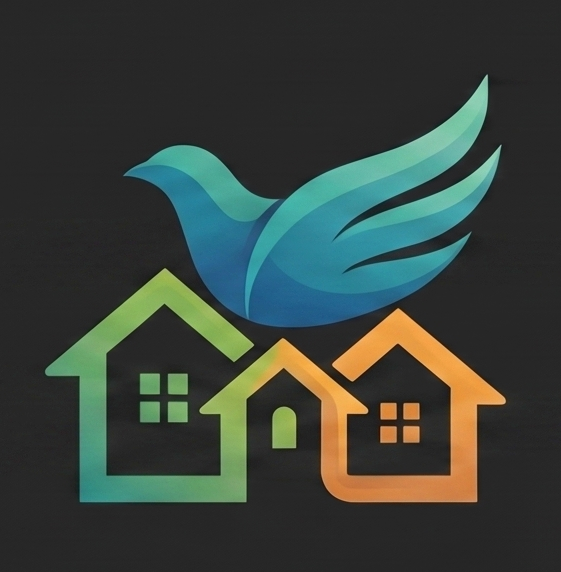

北屯區和平里 里民小幫手
和平里數位服務整合入口
LINE 圖文選單服務入口
依不同角色與需求，快速進入對應功能頁面。
本系統整合和平里案件通報、特約商店與活動公佈欄三項服務，統一以「北屯區和平里 里民小幫手」為對外名稱。 使用者平時可透過 LINE 圖文選單中的專屬連結直接進入，也可從本頁選擇需要的功能入口。
使用提醒：
若您是從 LINE 進入，請依選單指示使用對應功能；若您是首次開啟本系統，可由右側入口按鈕直接前往。